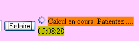
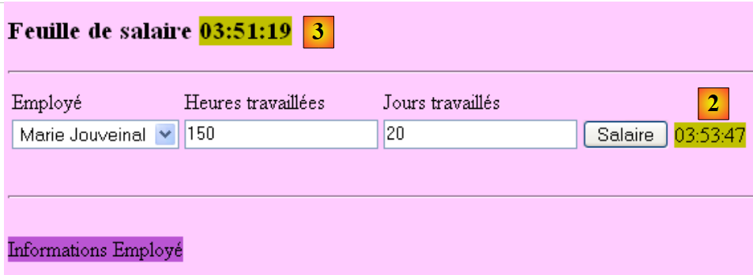

5. De applicatie atie [SimuPaie] – versie 2 – AJAX / ASP.NET
5.1. Introduction
De AJAX-technologie (Asynchronous Javascript And Xml) omvat een reeks technologieën:
- JavaScript: een HTML-pagina die in een browser wordt weergegeven, kan JavaScript-code bevatten. Deze code wordt door de browser uitgevoerd als de gebruiker de uitvoering van JavaScript-code in zijn browser niet heeft uitgeschakeld. Deze technologie bestond al vanaf het prille begin van het web en kent sinds 2005 een hernieuwde belangstelling dankzij AJAX.
- DOM: Document Object Model. De JavaScript-code die in een HTML-pagina is ingebed, heeft toegang tot het document in de vorm van een objectboom, het DOM. Elk element van het document (een invoerveld, een <div>-tag met een naam, een <select>-tag, ...) wordt weergegeven door een knooppunt in de boomstructuur. De JavaScript-code kan het weergegeven document wijzigen door de DOM aan te passen. Zo kan de code bijvoorbeeld de tekst in een invoerveld wijzigen via het knooppunt van de DOM dat dit veld vertegenwoordigt.
AJAX gebruikt JavaScript om op de achtergrond communicatie tussen browser en server tot stand te brengen. Om te reageren op een gebeurtenis, zoals het klikken op een knop, wordt er JavaScript-code door de browser uitgevoerd om een HTTP-verzoek naar de server te sturen. Dit verzoek bevat parameters die de server aangeven wat hij moet doen. De server voert vervolgens de gevraagde actie uit. Als antwoord stuurt de server een HTTP-stream naar de browser, die gegevens bevat waarmee de momenteel weergegeven pagina gedeeltelijk kan worden bijgewerkt. Dit gebeurt via de DOM van het document en de uitvoering van JavaScript-code die in het document is ingebed. De door de server teruggestuurde gegevens kunnen in verschillende formaten worden verzonden: XML, HTML, JSON, onopgemaakte tekst, ...
Het voordeel van deze technologie ligt in deze gedeeltelijke update van het weergegeven document. Dit betekent:
- minder gegevensuitwisseling tussen de client en de server en dus een snellere reactie
- een soepeler werkende grafische interface, omdat de acties van de gebruiker niet leiden tot het volledig herladen van de pagina.
In een intranet waar de netwerkcommunicatie snel verloopt, maakt AJAX het mogelijk om webapplicaties te ontwikkelen die qua gedrag dicht in de buurt komen van klassieke Windows-interfaces. Het is namelijk mogelijk om gebeurtenissen, zoals een wijziging in de selectie binnen een lijst, te verwerken en de pagina onmiddellijk en gedeeltelijk te verversen om deze wijziging weer te geven. Het feit dat de pagina niet volledig opnieuw wordt geladen, geeft de gebruiker het gevoel van soepelheid dat hij gewend is van Windows-toepassingen. Voor internettoepassingen, waar de responstijden lang kunnen zijn, blijft de AJAX-technologie bruikbaar, maar het gevoel van soepelheid is afhankelijk van de snelheid van het netwerk.
De grootste uitdaging in AJAX is de programmeertaal JavaScript. Deze taal is al in de begintijd van het web ontstaan,
- blijkt het weinig geschikt te zijn voor objectgeoriënteerd programmeren. Het is bijvoorbeeld geen getypeerde taal. Het type van de verwerkte gegevens wordt niet gedeclareerd. Hierin lijkt het op talen zoals Perl of PHP.
- Er is geen standaard die door alle browsers wordt geaccepteerd. Elke browser heeft zijn eigen "JavaScript"-uitbreidingen, waardoor JavaScript-code die voor IE is geschreven, mogelijk niet werkt in Mozilla Firefox en vice versa.
- Het is moeilijk te debuggen, omdat browsers geen krachtige tools bieden voor het debuggen van de JavaScript-code die ze uitvoeren.
Al deze nadelen van JavaScript zorgden ervoor dat het vóór de komst van AJAX nauwelijks werd gebruikt. Toen men eenmaal inzag hoe nuttig het was om JavaScript-code op de achtergrond uit te voeren, om HTTP-verzoeken naar de webserver te sturen en het antwoord daarvan te gebruiken om, met behulp van DOM, een gedeeltelijke update van het weergegeven document uit te voeren, gingen de ontwikkelteams aan de slag en stelden ze frameworks voor waarmee AJAX mogelijk werd gemaakt zonder dat de ontwikkelaar JavaScript-code hoefde te schrijven. Hiervoor zijn JavaScript-bibliotheken geschreven die zich aanpassen aan de browser van de gebruiker. Het invoegen van JavaScript-code in de HTML-pagina die naar de browser wordt verzonden, gebeurt aan de serverzijde, volgens technieken die verschillen naargelang het gebruikte AJAX-framework. Er bestaan Ajax-frameworks voor zowel Java, .NET, PHP, Ruby, ... AJAX is geïntegreerd in Visual Web Developer 2008.
5.2. Het Visual Web Developer-project van de [web-ui-ajax]-laag
De nieuwe versie wordt verkregen door de vorige versie te dupliceren. Alleen de pagina [Default.aspx] wordt gewijzigd.
 |
- naar [1]: met Windows Verkenner dupliceert men de projectmap [pam-v1-adonet] en geeft men deze de naam [pam-v2-adonet-ajax]. Vervolgens open je met Visual Web Developer het project (Bestand / Project openen) van deze nieuwe map [2]
- in [3], en we geven het een nieuwe naam
 |
- en wijzigen we in de eigenschappen van het nieuwe project de naam van de assembly [4] en de standaardnaamruimte [5].
Zodra dit is gebeurd, vervangen we in de bestanden [Default.aspx, Default.aspx.cs, Default.aspx.designer.cs, Global.asax, Global.asax.cs] de naamruimte [pam_v1] door de naamruimte [pam_v2], zodat deze overeenkomt met de standaardnaamruimte. Bijvoorbeeld: [Default.aspx] [6] wordt:
<%@ Page Language="C#" AutoEventWireup="true" CodeBehind="Default.aspx.cs" Inherits="pam_v2._Default" %>
...
De pagina [Default.aspx] wordt als volgt gewijzigd:
 |
- toevoeging van Ajax-componenten aan het formulier [Default.aspx] (zie [2] hierboven).
- 2A: de component <asp:ScriptManager> is vereist voor elk project AJAX
- 2B: de component <asp:UpdatePanel> wordt gebruikt om het gebied af te bakenen dat moet worden vernieuwd wanneer de gebruiker op POST klikt. Deze component voorkomt dat de pagina volledig opnieuw wordt geladen.
- 2C: de component <asp:UpdateProgress> wordt gebruikt om tijdens de update een tekst of afbeelding weer te geven om de gebruiker hiervan op de hoogte te stellen, zoals hieronder weergegeven:
 |
- (vervolg)
- 2D: een type Label met de naam LabelHeureLoad dat het tijdstip weergeeft waarop de gebeurtenishandler Load van de pagina wordt uitgevoerd.
- 2E: een type Label met de naam LabelHeureSalaire, dat het tijdstip weergeeft waarop de gebeurtenishandler Click wordt uitgevoerd op de knop [Salaire]. We willen laten zien dat Ajax niet de hele pagina opnieuw laadt wanneer er op de knop [Salaire] wordt geklikt. Dit is te zien op de vorige schermafbeelding, waar twee verschillende tijden te zien zijn in de twee Labels-elementen.
De eerdere Ajax-aanpassing van het formulier kan rechtstreeks in de broncode van [Default.aspx] worden uitgevoerd door Ajax-uitbreidingstags toe te voegen:
...
<body style="text-align: left" bgcolor="#ffccff">
<h3>
Feuille de salaire
<asp:Label ID="LabelHeureLoad" runat="server" BackColor="#C0C000"></asp:Label></h3>
<hr />
<form id="form1" runat="server">
<asp:ScriptManager ID="ScriptManager1" runat="server" EnablePartialRendering="true" />
<asp:UpdatePanel runat="server" ID="UpdatePanelPam" UpdateMode="Conditional">
<ContentTemplate>
<div>
<table>
<tr>
...
<tr>
<td>
<asp:DropDownList ID="ComboBoxEmployes" runat="server">
</asp:DropDownList></td>
<td>
<asp:TextBox ID="TextBoxHeures" runat="server" EnableViewState="False">
</asp:TextBox></td>
<td>
<asp:TextBox ID="TextBoxJours" runat="server" EnableViewState="False">
</asp:TextBox></td>
<td>
<asp:Button ID="ButtonSalaire" runat="server" Text="Salaire" CausesValidation="False" /></td>
<td> <asp:UpdateProgress ID="UpdateProgress1" runat="server">
<ProgressTemplate>
<img src="images/indicator.gif" />
<asp:Label ID="Label5" runat="server" BackColor="#FF8000" EnableViewState="False"
Text="Calcul en cours. Patientez ...."></asp:Label>
</ProgressTemplate>
</asp:UpdateProgress>
<asp:Label ID="LabelHeureSalaire" runat="server" BackColor="#C0C000"></asp:Label></td>
</tr>
<tr>
...
</tr>
</table>
</div>
<br />
....
<table>
<tr>
<td>
Salaire net à payer :
</td>
<td align="center" bgcolor="#C0C000" height="20px">
<asp:Label ID="LabelSN" runat="server" EnableViewState="False"></asp:Label></td>
</tr>
</table>
</asp:Panel>
</ContentTemplate>
</asp:UpdatePanel>
</form>
</body>
</html>
- regel 8: elk Ajax-formulier moet de tag <asp:ScriptManager> bevatten. Deze tag maakt het gebruik van de nieuwe Ajax-componenten mogelijk:
 |
- de tag <asp:ScriptManager> kan worden verkregen door te dubbelklikken op de bovenstaande component [ScriptManager]. Zorg ervoor dat deze tag zich binnen de tag <form> in de broncode bevindt. Het attribuut [EnablePartialRendering= "true "] op regel 8 ontbreekt standaard. Aangezien de waarde "true" de standaardwaarde is, is het niet noodzakelijk.
- regel 9: met de tag <asp:UpdatePanel> kunnen de delen van de pagina worden afgebakend die bij een gedeeltelijke vernieuwing van de pagina moeten worden bijgewerkt. Het attribuut [UpdateMode="Conditional"] geeft aan dat het gebied alleen moet worden bijgewerkt bij een AJAX-gebeurtenis van een component in het gebied. De andere waarde is [UpdateMode="Always"] en dit is de standaardwaarde. Met dit attribuut wordt het veld UpdatePanel altijd bijgewerkt, zelfs als de Ajax-gebeurtenis afkomstig is van een component van een ander veld, UpdatePanel. Over het algemeen is dit gedrag ongewenst.
De tag <asp:UpdatePanel> ondersteunt twee onderliggende tags: <ContentTemplate> en <Triggers>.
- De tags <asp:ContentTemplate>, op regel 10 en 53, bakenen het gebied van de pagina af dat gedeeltelijk moet worden bijgewerkt.
- regels 27-33: een Ajax-component <asp:UpdateProgress> waarmee tekst kan worden weergegeven gedurende de hele update van de pagina. Als er bijvoorbeeld op de knop [Salaire] wordt geklikt, wordt er op de achtergrond een POST geactiveerd. De browser toont dan geen zandloper, waardoor de gebruiker in de verleiding kan komen om het formulier te blijven gebruiken. Met de tag <asp:UpdateProgress> kan een tekst worden weergegeven die aangeeft dat de pagina wordt vernieuwd. Er kan ook een afbeelding worden weergegeven. Hier wordt een geanimeerde afbeelding (regel 29) en een tekst (regels 30-31) weergegeven:
 |
- regels 28-32: de tag <ProgressTemplate> bakent de inhoud af die wordt weergegeven gedurende de gehele update van het gebied UpdatePanel, waarin de tag UpdateProgress zich bevindt.
- regels 29-31: de geanimeerde afbeelding en de tekst die worden weergegeven tijdens de update van het gebied UpdatePanel.
- regel 5: het label LabelHeureLoad wordt buiten het ajax-gebied geplaatst
- regel 34: het label LabelHeureSalaire wordt in het Ajax-gebied geplaatst
De code van de pagina [Default.aspx.cs] verandert als volgt:
protected void Page_Load(object sender, System.EventArgs e)
{
// tijdstip van elke paginalading
LabelHeureLoad.Text = DateTime.Now.ToString("hh:mm:ss");
// verwerking van de eerste aanvraag
if (!IsPostBack)
{
....
}
- regel 4: bijwerken van het tijdstip waarop de pagina is geladen
protected void ButtonSalaire_Click(object sender, System.EventArgs e)
{
// tijdstip van salarisberekening
LabelHeureSalaire.Text = DateTime.Now.ToString("hh:mm:ss");
// de gegevens worden gecontroleerd
....
}
- regel 4: bijwerken van het tijdstip waarop het salaris wordt berekend
Om de pagina [Default.aspx] te voltooien, moeten we de geanimeerde afbeelding opnemen waarnaar wordt verwezen in regel 4 van de volgende broncode van de pagina:
<td>
<asp:UpdateProgress ID="UpdateProgress1" runat="server">
<ProgressTemplate>
<img src="images/indicator.gif" />
<asp:Label ID="Label5" runat="server" BackColor="#FF8000" EnableViewState="False"
Text="Calcul en cours. Patientez ...."></asp:Label>
</ProgressTemplate>
</asp:UpdateProgress>
<asp:Label ID="LabelHeureSalaire" runat="server" BackColor="#C0C000"></asp:Label>
</td>
Met Windows Verkenner voegen we het bestand [images/indicator.gif] toe aan de projectmap [1]:
 |
- in [2] laten we alle bestanden van het project weergeven
- in [3], de map [images]
- in [4] voegen we de map [images] toe aan het project
 |
- in [5] is de map [images] in het project opgenomen
- in [6] worden de bestanden die geen deel uitmaken van het project verborgen
- in [7], het nieuwe project
5.3. Testen van de Ajax-oplossing
Wanneer het project (CTRL-F5) wordt uitgevoerd, verschijnt de volgende pagina:
 |
- in [1], de laadtijd van de pagina
Voer enkele tests uit en controleer of de knop [Salaire] niet leidt tot het volledig herladen van de pagina. U kunt dit zien aan de tijd die wordt weergegeven voor de verwerking van de klik op de knop [Salaire] [2], die niet dezelfde is als de tijd waarop de pagina [3] voor het eerst werd geladen:
 |
Voer de tests opnieuw uit door de eigenschap EnablePartialRendering van de component ScriptManager1 in te stellen op False:
 |
Constateer dat het gedrag nu overeenkomt met dat van een pagina zonder AJAX. De pagina wordt volledig opnieuw geladen wanneer op de knop [Salaire] wordt geklikt. Herhaal de tests met een andere browser. De test met meerdere browsers heeft tot doel aan te tonen dat de JavaScript-code die wordt gegenereerd door de servercomponenten ASP / AJAX correct wordt geïnterpreteerd door de verschillende browsers.
Tot slot zullen we de rol van de tag <asp:UpdateProgress> belichten. Laten we in de code van de procedure [ButtonSalaire_Click] van [Default.aspx.cs] een instructie toevoegen die de procedure gedurende 3 seconden onderbreekt:
using System.Threading;
...
protected void ButtonSalaire_Click(object sender, System.EventArgs e)
{
// tijdstip van de salarisberekening
LabelHeureSalaire.Text = DateTime.Now.ToString("hh:mm:ss");
// in afwachting
Thread.Sleep(3000);
// gegevens worden gecontroleerd
....
}
Regel 8 zorgt ervoor dat de thread die de procedure [ButtonSalaire_Click] uitvoert, 5 seconden moet wachten. Laten we vervolgens de tests opnieuw uitvoeren (nadat we het attribuut EnablePartialRendering van de component ScriptManager1 weer op True hebben gezet). Deze keer zien we de tekst van [UpdateProgress] en de geanimeerde afbeelding tijdens de berekening van het salaris:

5.4. Conclusion
Uit het vorige onderzoek is gebleken dat het mogelijk is om bestaande ASP.NET-toepassingen te ‘ajaxificeren’. De uitbreidingen AJAX van ASP.NET gaan verder dan wat zojuist is besproken. De lezer wordt uitgenodigd om de website [http://ajax.asp.net] te raadplegen.